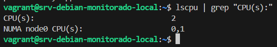
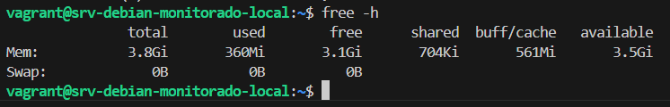
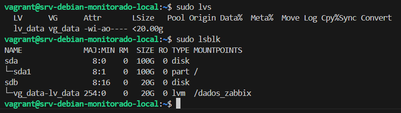

Cenário On-Premises Preciso (VirtualBox)
Subir o Host de monitoramento rigorosamente alinhado ao Desafio de RH: VirtualBox de Custo Zero operando via automação Vagrant (IaC), configurando LVM perfeitamente e 4GB RAM + 2 vCPU sem cliques sujos na UI Graphical.


